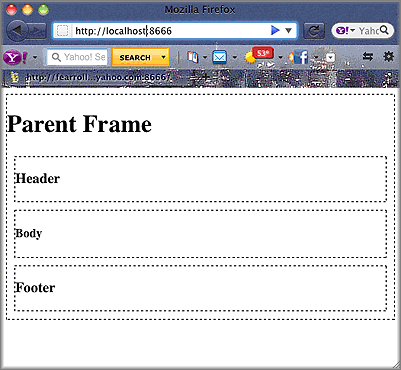

Using Multiple Mojits¶
Time Estimate: 15 minutes
Difficulty Level: Intermediate
Summary¶
This example shows how to use a parent mojit with multiple child mojits to create an HTML page.
The following topics will be covered:
- configuring the application to use multiple mojits
- including the output from different mojits in one view template
- embedding the rendered view template into the HTML frame
Tip
To learn how to use the Mojito built-in mojit HTMLFrameMojit to aggregate and display the output from child mojits, see Using the HTML Frame Mojit.
Implementation Notes¶
In the screenshot below, you see an HTML page divided into header, body, and footer sections that were created by individual mojits.
In the application.json below that is used for this code example, you see that this application is using the frame instance of type FrameMojit. The FrameMojit forms a skeleton page of div tags that use content created by the child mojits HeaderMojit, BodyMojit, and FooterMojit.
[
{
"settings": [ "master" ],
"appPort": 8666,
"specs": {
"parent": {
"type": "FrameMojit",
"config" : {
"children": {
"header": {
"type": "HeaderMojit"
},
"body": {
"type": "BodyMojit"
},
"footer": {
"type": "FooterMojit"
}
}
}
}
}
}
]
In routes.json, the path set for each mojit is different, but the index function from each mojit is called when GET calls are made. What’s not obvious here is how the frame mojit gets output from the other mojits because that happens in the controller of the frame mojit and not in the route configuration.
[
{
"settings": ["master"],
"root": {
"verbs": ["get"],
"path": "/",
"call": "frame.index"
},
"header": {
"verbs": ["get"],
"path": "/header",
"call": "header.index"
},
"body": {
"verbs": ["get"],
"path": "/body",
"call": "body.index"
},
"footer": {
"verbs": ["get"],
"path": "/footer",
"call": "footer.index"
}
}
]
In controller.server.js of the FrameMojit, the Composite addon allows the parent mojit to execute the child mojits defined in application.json that we looked at earlier. After the children mojits are executed, the data that is passed to the done method in the children mojits becomes accessible in the index.mu.html view template of FrameMojit, which we will take a look at next.
YUI.add('FrameMojit', function(Y,NAME) {
Y.mojito.controllers[NAME] = {
init: function(config) {
this.config = config;
},
index: function(actionContext) {
actionContext.composite.done({template: {title: "Parent Frame"}});
}
};
}
}, '0.0.1', {requires: []});
The index.mu.html view template of FrameMojit, shown below, has variables from the children mojits in different div tags. The variables header, body, and footer are in triple mustaches, which allows you to return unescaped HTML.
<div id="{{mojit_view_id}}" class="mojit" style="border: dashed black 1px;">
<h1>{{title}}</h1>
<div class="header" style="border: dashed black 1px; margin: 10px 10px 10px 10px;">
{{{header}}}
</div>
<div class="body" style="border: dashed black 1px; margin: 10px 10px 10px 10px;">
{{{body}}}
</div>
<div class="footer" style="border: dashed black 1px; margin: 10px 10px 10px 10px;">
{{{footer}}}
</div>
</div>
Setting Up this Example¶
To set up and run multiple_mojits:
Create your application.
$ mojito create app multiple_mojits
Change to the application directory.
Create the mojits for the HTML frame, body, header, and footer.
$ mojito create mojit FrameMojit
$ mojito create mojit BodyMojit
$ mojito create mojit HeaderMojit
$ mojito create mojit FooterMojit
To configure your application to use the mojits you created, replace the code in application.json with the following:
[ { "settings": [ "master" ], "specs": { "frame": { "type": "FrameMojit", "config": { "children": { "header": { "type": "HeaderMojit" }, "body": { "type": "BodyMojit" }, "footer": { "type": "FooterMojit" } } } } } } ]
To configure routing, create the file routes.json with the following:
[ { "settings": ["master"], "root": { "verbs": ["get"], "path": "/", "call": "frame.index" }, "header": { "verbs": ["get"], "path": "/header", "call": "header.index" }, "body": { "verbs": ["get"], "path": "/body", "call": "body.index" }, "footer": { "verbs": ["get"], "path": "/footer", "call": "footer.index" } } ]
Change to mojits/FrameMojit.
To allow the FrameMojit to execute its child mojits, replace the code in controller.server.js with the following:
YUI.add('FrameMojit', function(Y,NAME) { Y.mojito.controllers[NAME] = { init: function(config) { this.config = config; }, index: function(actionContext) { actionContext.composite.done({template: {title: "Parent Frame"}}); } }; }, '0.0.1', {requires: []});
Modify the default template to use mustache variables from the child mojits by replacing the code in views/index.mu.html with the following:
<div id="{{mojit_view_id}}" class="mojit" style="border: dashed black 1px;"> <h1>{{title}}</h1> <div class="header" style="border: dashed black 1px; margin: 10px 10px 10px 10px;"> {{{header}}} </div> <div class="body" style="border: dashed black 1px; margin: 10px 10px 10px 10px;"> {{{body}}} </div> <div class="footer" style="border: dashed black 1px; margin: 10px 10px 10px 10px;"> {{{footer}}} </div> </div>Change to HeaderMojit directory.
$ cd ../HeaderMojit
Replace the code in controller.server.js with the following:
YUI.add('HeaderMojit', function(Y,NAME) { Y.mojito.controllers[NAME] = { init: function(config) { this.config = config; }, index: function(actionContext) { actionContext.done({title: "Header"}); } }; }, '0.0.1', {requires: []});
The done method will make its parameters available to the view template.
Replace the code in views/index.mu.html with the following:
<div id="{{mojit_view_id}}" class="mojit"> <h3>{{title}}</h3> </div>
This HTML fragment will be included in the header section of the default view template of FrameMojit.
Change to BodyMojit directory.
$ cd ../BodyMojit
Replace the code in controller.server.js with the following:
YUI.add('BodyMojit', function(Y,NAME) { Y.mojito.controllers[NAME] = { init: function(config) { this.config = config; }, index: function(actionContext) { actionContext.done({title: "Body"}); } }; }, '0.0.1', {requires: []});
Replace the code in views/index.mu.html with the following:
<div id="{{mojit_view_id}}" class="mojit"> <h4>{{title}}</h4> </div>
This HTML fragment will be included in the body section of the default view template of FrameMojit.
Change to the FooterMojit directory.
$ cd ../FooterMojit
Replace the code in controller.server.js with the following:
YUI.add('FooterMojit', function(Y,NAME) { Y.mojito.controllers[NAME] = { init: function(config) { this.config = config; }, index: function(actionContext) { actionContext.done({title: "Footer"}); } }; }, '0.0.1', {requires: ['mojito']});
Replace the code in views/index.mu.html with the following:
<div id="{{mojit_view_id}}" class="mojit"> <h3>{{title}}</h3> </div>
This HTML fragment will be included in the footer section of the default view template of FrameMojit.
From the application directory, run the server.
$ mojito start
To view your application, go to the URL: